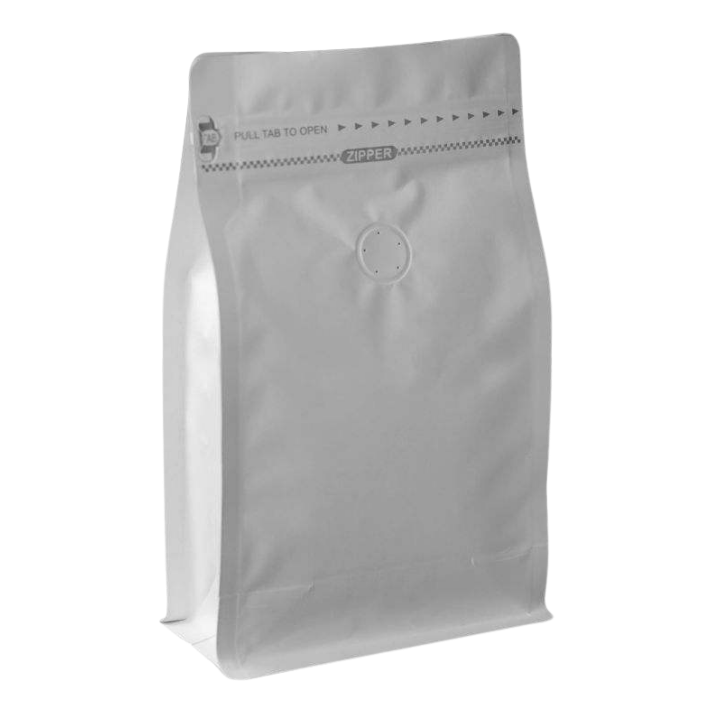
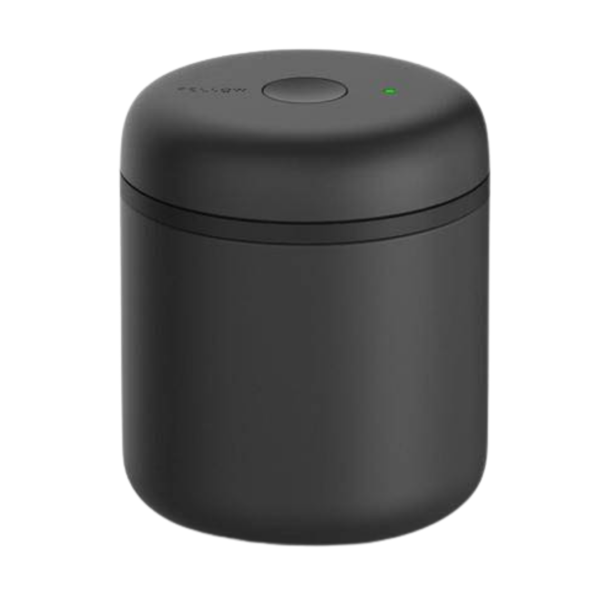
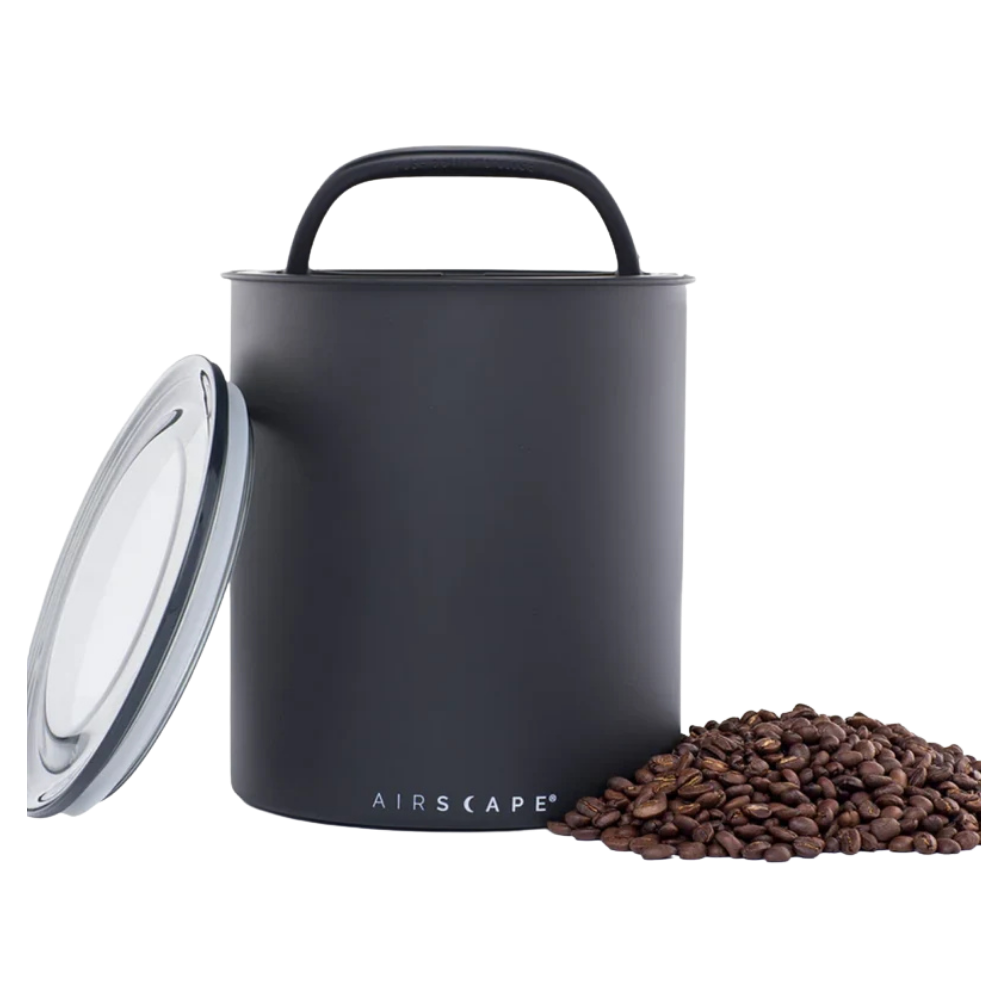

Guía del café
Algunas recomendaciones para conservar, preparar y disfrutar mejor tu café.
El café tostado es sensible al oxígeno, la humedad, la luz y el calor. Una buena conservación ayuda a mantener durante más tiempo sus aromas y sabores.
- La forma más simple de conservar bien el café es mantenerlo en su bolsa original con válvula. Después de cada uso, simplemente retirás la mayor cantidad de aire posible, cerrás bien la bolsa y la guardás en un lugar fresco, seco y protegido de la luz.
- También podés utilizar un recipiente hermético diseñado específicamente para conservar café, como Fellow Atmos, que permite reducir la cantidad de oxígeno dentro del recipiente.
- No recomendamos guardar el café en la heladera, ni dejarlo expuesto al aire, al sol o cerca de fuentes de calor.
Nuestro consejo: mantené el café bien cerrado, en un lugar fresco, seco y protegido de la luz.



📅 El café recién tostado necesita un tiempo para liberar los gases que se generan durante el tueste. Por eso, no siempre está en su mejor momento inmediatamente después de ser tostado.
Recomendamos dejarlo reposar aproximadamente 1 a 2 semanas antes de prepararlo, aunque el tiempo ideal puede variar según el café, el proceso y el nivel de tueste.
Algunos cafés alcanzan su mejor expresión antes, mientras que otros necesitan un poco más de tiempo.
Una vez que el café haya reposado, recomendamos disfrutarlo durante el primer mes desde la fecha de tueste, cuando sus aromas y sabores suelen estar en su mejor momento.
Después seguirá siendo café perfectamente utilizable si ha sido conservado correctamente, pero con el paso del tiempo irá perdiendo intensidad y complejidad.
Nuestro consejo: no tengas prisa. Dejá que el café descanse, y después disfrutalo mientras todavía conserva toda su expresión.
Contenido próximamente.
Contenido próximamente.
Contenido próximamente.